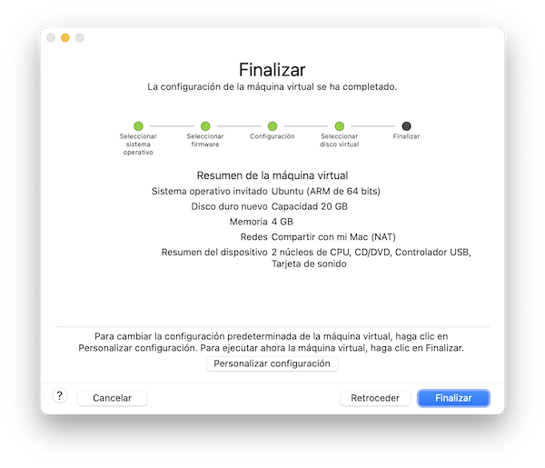
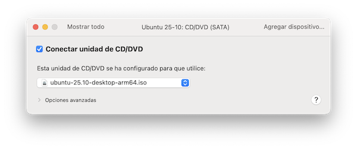

Creando una máquina virtual¶
Una vez descargado el archivo ISO desde la página web de la distribución de nuestra elección, si vamos a instalar Linux directamente en la máquina física, sustituyendo al antiguo sistema operativo, podemos saltarnos este capítulo. Tendremos que preparar el pendrive de instalación, como ya se ha explicado.
Aquí veremos como crear una máquina virtual en un Mac. La descripción es válida para ordenadores Windows, ya que el procedimiento es parecido.
Máquinas virtuales¶
Dicho de una forma gráfica, y sin entrar en tecnicismos, una máquina virtual es un programa especial capaz de simular el funcionamiento de un ordenador ficticio, que podemos mostrar en una ventana del escritorio de nuestra computadora. En la siguiente imagen tenemos una máquina virtual Windows sobre el escritorio de mi ordenador Mac (al fondo, en gris claro):
Ambas máquinas, la física y la virtual, se ejecutan simultáneamente compartiendo los recursos del ordenador:
-
crearemos un gran archivo que representa el disco de la máquina virtual. Ahí se "empaquetarán" todos sus archivos y carpetas, como haríamos, por ejemplo, cuando creamos un archivo zip. De esta forma aislaremos los contenidos de la máquina virtual.
A esto le llamaremos disco duro virtual. Cuando estemos trabajando con la máquina virtual, acudirá a este archivo especial y accederá a sus carpetas como lo haría con cualquier otro disco.
-
la CPU tendrá que ejecutar simultáneamente los programas de ambas máquinas
- el escritorio de la máquina virtual se mostrará en una ventana, aunque podemos maximizarla y hacer que ocupe toda la pantalla, "tapando" el escritorio de la máquina física
- teclado y ratón son compartidos por ambos escritorios, de igual forma que hacemos cuando tenemos dos programas ejecutándose en ventanas separadas
- es posible arrastrar y soltar objetos de un escritorio a otro
- podremos compartir el portapapeles, copiando y pegando objetos de un ordenador a otro, el físico y el virtual
- también podremos compartir determinadas carpetas del disco físico, permitiendo acceder a ellas desde la máquina virtual, que los considerará como dispositivos externos, al igual que sucede cuando insertamos un dispositivo USB.
A la máquina física se le llama Host, y a la virtual, Guest. Podemos tener varias máquinas virtuales Linux, Windows, Mac o cualquier otro sistema operativo contemplado por nuestro software de virtualización. ¿Tenemos un ordenador Mac y necesitamos ejecutar un programa para Windows? Lo podemos lograr creando una máquina virtual Windows, siempre que obtengamos un DVD de instalación descargándolo de la página web de Microsoft.
Pero no todo son ventajas, hay una desventaja importante. Si los sistemas operativos son diferentes, tenemos que tener en cuenta que los programas serán incompatibles. Una máquina física Windows, por ejemplo, no es capaz de ejecutar programas Linux, pongamos por caso. El software que simula la máquina virtual debe hacer una traducción al vuelo para adaptar los programas durante la ejecución. El esfuerzo a realizar por la CPU física se multiplica.
Por otra parte, cuando iniciamos la máquina virtual, esta reserva para su propio uso la parte de memoria RAM que le asignemos en su configuración, restándola de la RAM asignada a la máquina física. Si nuestro ordenador tiene poca memoria, tendremos que usar en la máquina virtual un sistema operativo con poco consumo de memoria.
Todo lo mencionado puede provocar una cierta disminución del rendimiento, sobre todo en el caso de algunos programas multimedia o con exigencia de recursos, aunque la posible ralentización resulta inapreciable si tenemos un ordenador de potencia media-alta.
Otra de las "pegas" con las que me he encontrado en mi experiencia personal se refiere a la posibilidad de permitir el acceso desde la máquina virtual a carpetas de la máquina física. Si desde la máquina virtual borramos algún archivo de una de esas carpetas, no hay una papelera de reciclaje compartida, por lo que la máquina virtual borra definitivamente el archivo. La máquina virtual solo tiene papelera de reciclaje para sus propios archivos, alojados en el disco duro virtual. En el caso de carpetas compartidas, el borrado de archivos conviene hacerlo desde el escritorio de la máquina física, para que vayan a su papelera.
Programas de virtualizaci√≥n¶
Para tener máquinas virtuales necesitaremos un programa especial para simularlas y administrarlas. Si nuestro sistema operativo host es Windows, debemos saber que algunas versiones incluyen de serie un programa llamado Hyper V. Microsoft también proporciona un entorno llamado WSL (Subsistema de Windows para Linux), que permite ejecutar programas Linux en una máquina funcionando con Windows. Véase documentación de Microsoft. WSL2 incluso permite integrar aplicaciones gráficas en el escritorio de Windows, véase guía. Pero no se trata de una máquina virtual aislada, sino de ejecutar programas Linux en la sesión de Windows. Ubuntu cuenta con una guía de integración en WSL.
Ejecutar windows en máquinas Linux
En el ecosistema Linux, encontraremos software que permite hacer la operación inversa, ejecutar programas Windows en máquinas Linux. El programa equivalente a WSL es Wine.
Si lo que tenemos es un Mac, como es mi caso, Apple distribuye un programa de pago para crear máquinas virtuales, llamado Parallels.
Si lo que buscamos son soluciones válidas para cualquier sistema operativo Host, una de las más populares es VirtualBox, suministrada por Oracle para su libre descarga y uso de forma gratuita.
Otra alternativa similar es VMWare. Es un producto comercial que tiene versiones gratuitas si el uso que le vamos a dar es personal. La versión para ordenadores Host Macinstosh es VMWare Fusion, y la versión para Host Windows y Linux se llama Workstation Player.
QEMU es otra posibilidad, pero está más dirigido a usuarios con perfil técnico. Las máquinas virtuales se gestionan mediante comandos, aunque existen complementos que permiten ampliar las funcionalidades.
Xen es otro proyecto de software libre para desarrollar servicios de virtualización de escritorio, servidores, etc. Sirve de base al desarrollo de productos comerciales de varias empresas tecnológicas.
Yo he ensayado con VirtualBox y VMWare. El primero parece ser bastante popular, pero mi experiencia personal me ha demostrado un mejor rendimiento usando el segundo, resultando inapreciable la posible ralentización de la máquina. Lo que he visto es que ambos productos tienen algunas lagunas en su versión para Apple. En el momento de escribir esto, suelo apostar por VMware, aunque es una opción personal. En líneas generales, va bastante bien, pero he detectado algunos fallos de sonido en el caso de los procesadores de Apple más recientes. Con los antiguos iba muy bien. Cuando la cosa se pone "tonta", suelo entrar en la configuración de la máquina virtual y desconecto la tarjeta de sonido. Generalmente, el problema se soluciona tras desconectar y volver a conectar transcurridos unos segundos. Espero que VMware solucione el problema, porque resulta algo engorroso.
En este cuaderno trato de plasmar las notas recogidas a partir de mi experiencia particular. Como mi ordenador es un Mac, usaré VMWare Fusion. Si la máquina física fuera Windows, el funcionamiento de VMWare Workstation Player debería ser bastante parecido a lo aquí descrito.
El futuro de VMware
A finales de 2023, VMware fue adquirida por una empresa llamada Broadcom. Véase anuncio en:
https://www.broadcom.com/info/vmware
Esto tiene varias consecuencias. Por un lado, la descarga del producto nos redirige a la página web de Broadcom. Por otra, se mantiene la política de libre descarga para uso personal, sin un coste económico. Si en el futuro hay cambios en este aspecto, o no nos convence la solución adoptada, siempre podemos optar por otro software de virtualización.
Instalando VMWare Fusion¶
Para descargar VMware, necesitamos una cuenta de usuario en Broadcom. El formulario de alta está en este enlace. Tras completar nuestros datos, se nos enviará un email de verificación a nuestro correo.
La página de descargas de Broadcom, sin necesidad de pasar por VMware, está aquí. Una vez introducidas nuestras credenciales de usuario, seleccionar “VMware Fusion Pro for Personal Use” y marcar la casilla “I agree to Terms and Conditions”.
El archivo descargado es una imagen de disco .dmg, típica de los Mac. Lo abrimos haciendo doble clic sobre el mismo y seguimos los pasos del proceso de instalación.
Iniciar VMWare¶
VMWare se ejecuta en múltiples ventanas, tantas como máquinas virtuales tengamos en ejecución. Hay una ventana adicional llamada "Biblioteca de máquinas virtuales". Muestra una lista de máquinas instaladas en nuestro equipo, y una imagen de la que tengamos seleccionada, en su estado actual. Si dicha máquina está apagada, veremos la imagen en negro.
En la siguiente imagen, tengo varias máquinas virtuales instaladas en mi ordenador:
Nota
Aquí vemos una de las ventaja de la virtualización. Podemos usarla para probar otros sistemas operativos o una versión antigua de nuestro sistema, si tenemos necesidad de ello (y si contamos con el disco de instalación, naturalmente).
¡Cuidado!
Podría ser bastante tentador abrir varias máquinas virtuales simultáneamente, mostrándose cada una en la correspondiente ventana del escritorio físico. Pero no debemos olvidar que cada máquina, las virtuales y la física, consumen su parte de memoria RAM. Si la memoria de nuestro ordenador no tiene muchos gigas, el rendimiento se verá seriamente afectado.
Cada vez que iniciamos VMWare, dependiendo de como lo tengamos configurado, lo primero que veremos será la biblioteca de máquinas virtuales o la máquina virtual que tengamos configurada por defecto, si es el caso.
Si la ventana de "Biblioteca" está oculta, desde el menú de cualquier ventana de VMWare podemos visualizarla pulsando en la opción Ventana > Biblioteca de máquinas virtuales.
Configurar VMWare¶
Antes de crear máquinas virtuales, vamos a configurar el funcionamiento de VMWare. El menú Preferencias de VMWare cuenta con opciones que afectan al comportamiento general de todas las máquinas virtuales:
Si tenemos problemas de visualización, conviene revisar el apartado Pantalla:
La resolución del escritorio virtual se ajustará al tamaño de la ventana, pero a veces esto no se comporta como a nosotros nos gustaría. Podemos configurar por separado el comportamiento de la máquina en dos situaciones distintas, cuando el escritorio se muestra en una ventana de la máquina física, o cuando ocupa toda la pantalla:
-
La opción ajustar máquina virtual a la pantalla significa que los contenidos se verán más grandes o más pequeños, pero sin modificar la resolución de la máquina virtual. El cambio de aspecto lo gestiona VMWare, agrandando o empequeñeciendo la imagen visualizada.
-
La opción cambiar tamaño, por el contrario, modifica la resolución en la máquina virtual. Esta tiene que estar atenta a los cambios en el tamaño de la ventana. A veces puede dar buenos resultados, pero en ocasiones, VMWare "vuelve loco" al sistema operativo virtual, quien cree que está ejecutándose en una máquina física e intenta adaptarse a la resolución de la pantalla.
¿Que opción usar? Yo he tenido diferentes resultados dependiendo del sistema operativo instalado, así que lo mejor es probar con ambas y escoger aquella con la que obtengamos mejores resultados.
Crear una nueva máquina virtual¶
Iniciamos VMWare y pulsamos en el menú Archivo > Nuevo. Alternativamente, lo arrancamos desde la ventana de Biblioteca de máquinas virtuales, pulsando en el icono Nuevo en la barra de título de la ventana.
Al iniciarse el proceso, se mostrará la siguiente ventana:
Pulsamos en Crear máquina personalizada. Seleccionamos el sistema operativo, Ubuntu para arquitecturas ARM de 64 bits:
El siguiente paso es crear el archivo que va a servir de disco duro virtual. En principio se reserva un número de gigas sugerido por VMware, que podemos configurar más adelante.
}"
Si pulsamos en "Personalizar configuración", podemos asignar un nombre y carpeta al disco duro virtual:
}"
Pulsamos en el botón [Finalizar]. En el directorio seleccionado se creará un archivo que empaqueta las especificaciones de la máquina virtual, discos virtuales, estado de la máquina, etc. Para examinar ese contenido, en los ordenadores Mac podemos buscar pulsar con el ratón en este archivo mientras mantenemos la tecla Ctrl. Esto despliega un menú emergente. Seleccionamos Mostrar contenido del paquete.
Configurar la máquina virtual¶
Además de la configuración general de VMWare, cada máquina virtual tiene la suya propia. Antes de instalar el sistema operativo, abrimos la biblioteca de máquinas virtuales (menú de VMware, Opción "Ventana > Biblioteca de máquinas virtuales"), seleccionamos la máquina recién creada, y pulsamos en el menú Máquina Virtual > Configuración. Se muestra la siguiente ventana con las opciones de configuración:
Veamos algunas opciones:
-
En el apartado CD/DVD, marcar "Conectar DVD" y seleccionar el archivo que hemos descargado de la página de Ubuntu. Será considerado como pendrive virtual.

Para volver a visualizar todas las opciones de configuración, pulsar en el botón Mostrar todo en la barra superior de la ventana.
-
En el apartado General podemos cambiar el nombre de la máquina y tipo de sistema operativo. También podemos configurar esta máquina virtual como aquella que se pone en marcha por defecto al arrancar VMWare. De todas formas, hasta que no esté instalada, conviene demorar esto.
-
En el apartado Compartir tenemos la lista de carpetas de la máquina física a las que tendremos acceso desde la virtual. Podemos pulsar en los iconos [+] y [-] para añadir o quitar carpetas de la lista.
-
El apartado Procesador y Memoria permite asignar más memoria RAM a la máquina virtual, que se restará de la utilizada por la máquina física. El rendimiento de cada máquina se verá afectado por la cantidad de memoria asignada. Consultar los requerimientos mínimos del sistema operativo descargado. Ubuntu los muestra en la página de descargas:
System requirements:
- 2 GHz dual-core processor or better
- 4 GB system memory
- 25 GB of free hard drive space
- Either a USB port or a DVD drive for the installer media
- Internet access is helpful
-
En el apartado adaptador de red, comprobar que tenemos Internet activado.
-
El apartado del disco duro permite asignar más gigas al disco virtual.
-
En el apartado pantalla podemos activar los gráficos 3D y establecer la cantidad de memoria asignada a la pantalla.
-
En el apartado disco de arranque podemos indicar el dispositivo al que acude la máquina virtual para cargar el sistema operativo. Típicamente suele ser el disco duro, pero durante la instalación necesitamos que vaya al DVD.
-
En el apartado aislamiento comprobar que tenemos activado el uso de copiar y pegar de una máquina a la otra.
Conexi√≥n a Internet en máquinas virtuales¶
Tratándose de una máquina virtual, la conexión a Internet, redes wifi, etc, queda resuelta en la máquina física. Todo lo que tenemos que hacer es asegurarnos de que hay una conexión activa en la máquina Host.
Supongamos, por ejemplo, que queremos buscar una red wifi. Lo haremos en la máquina física y la virtual se beneficiará de ello. En principio, todo se resuelve automáticamente.
Pero si tenemos problemas, VMWare puede proporcionar otras alternativas, que podemos ajustar en la configuración de la máquina virtual, apartado adaptador de red.
Espacio en el disco duro¶
En la máquina física se creará un enorme archivo como disco virtual, donde encerraremos toda la estructura de carpetas de la máquina virtual, pero también tenemos la opción de compartir determinadas carpetas de la máquina física, que en la máquina virtual se verán como si fueran dispositivos externos.
Para guardar documentos podemos utilizar una o varias carpetas compartidas, de forma que si desinstalamos la máquina virtual y todo su software, no perdamos esos archivos. Por este motivo, al configurar el disco virtual, no es necesario dedicarle un tamaño excesivo. Basta con lo necesario para instalar el software de la máquina virtual.
Iniciar la máquina virtual¶
El primer paso es asegurarnos de que el pendrive virtual de instalación de Ubuntu está siendo detectado por la máquina virtual. Para ello accedemos a la configuración, apartado CD/DVD, y nos aseguramos de ello, como vimos en el apartado anterior.
Al iniciar la máquina virtual se intentará cargar el sistema operativo a partir del disco duro virtual. Pâra el proceso de instalación tenemos que cambiar esto y asegurarnos de que el disco de arranque es el pendrive virtual. Acudimos a la configuración de la máquina virtual, apartado Disco de Arranque, y seleccionamos el DVD.
Ahora ya podemos poner en marcha la máquina virtual. Acudimos a la ventana de biblioteca de máquinas virtuales, seleccionamos la que hemos creado y pulsamos en el menú de VMWare "Máquina Virtual > Arrancar". El sistema acude al DVD virtual, busca el programa de arranque, y lo ejecuta. Lo que se visualiza es lo siguiente:

En el capítulo siguiente completaremos el proceso de arranque, veremos el aspecto del escritorio Gnome, y como ejecutar la instalación en el disco duro.